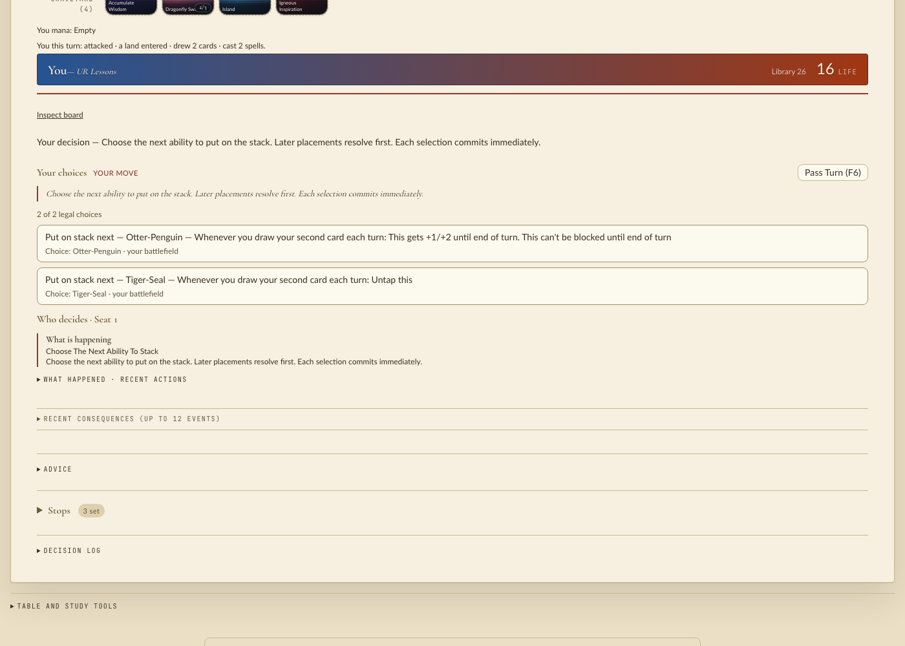
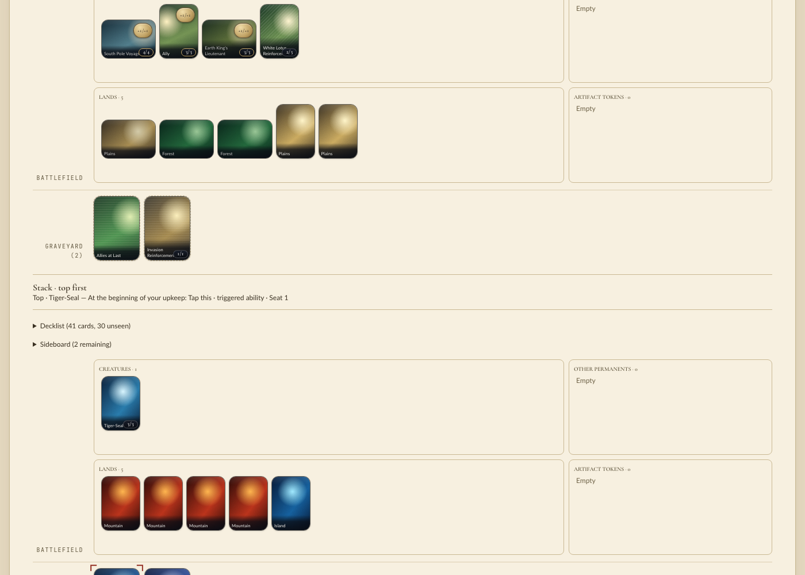
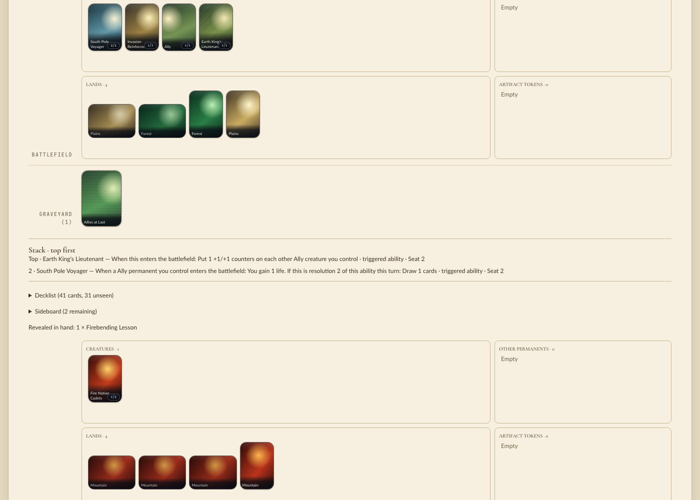
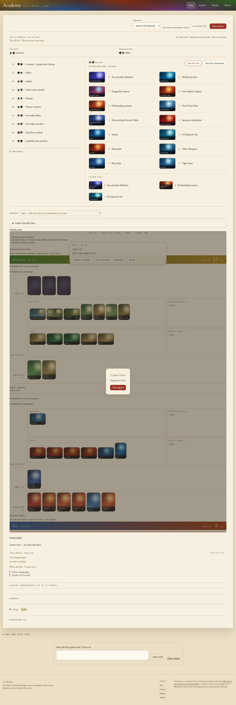
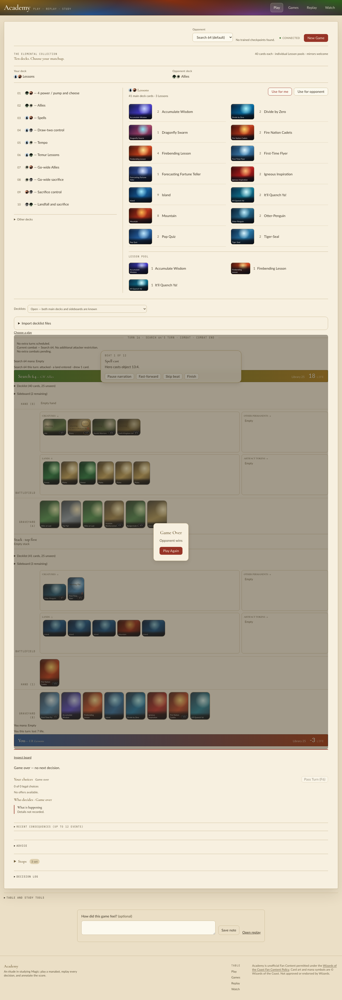
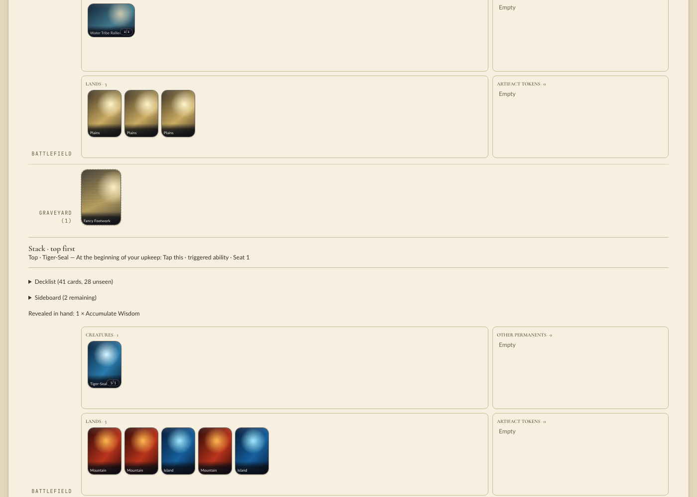

Head 0c2ce18e1, base fa56bd4a2. Release extension rebuilt at head (cp313, atomic replace) before every check below.
da964c606 (2026-11-12)Since the first pass: the TriggerSubject::Matching fold, the boxed predicate, the shared matching constructor and two base merges. Release extension rebuilt at this head and swapped in atomically.
trigger_description for every triggered ability in the catalog at 0c2ce18e1 and at this head, using a throwaway test that was removed afterward. 276 lines on each side, byte-identical: the subject fold changed no text a player or model reads..runs/qa307/play.py run: 1332 complete games, 0 errors, 0 unfinished, the same 76 distinct stack-ability descriptions../scripts/play --port 18741 --frontend-port 18742 and played one game to Game Over in headless Chromium, clicking only offered choices (96 clicks, no page errors). A trigger-ordering decision showed two draw-event triggers with their new text:
Nothing needed fixing. The "not reached" and "still wrong" lists below still apply.
Ran the engine's own trigger_description (what Academy's stack, the decision context and LLM text show) over every triggered ability of all 460 catalog definitions at base and head, via a throwaway test, since removed. 276 abilities each side, 91 changed, none lost. Full diff: qa307/trigger-text.diff.
| Base | Head |
|---|---|
| When you draw card 2 this turn | Whenever you draw your second card each turn |
| When an opponent draws card 2 this turn | Whenever an opponent draws their second card each turn |
| When this attacks | Whenever this attacks |
| When this and at least one other creature attack | Whenever this attacks with at least one other creature |
| At the beginning of each upkeep | At the beginning of each player's upkeep |
| When permanent is sacrificed (Mayhem Devil) | Whenever a permanent is sacrificed |
| Beastmaster Ascension: When one or more other creature permanents you control attack | Whenever a creature you control attacks (matches the printed per-creature trigger; behavior also changed to one trigger per attacker) |
Every changed line reads closer to the printed card. No changed line got worse.
Random legal play, managym.Env with skip_trivial on, every ordered deck pair of all 9 authored setups × 6 seeds: 1332 complete games, 0 errors, 0 unterminated. 76 distinct stack-ability descriptions observed; changed event families that actually fired include casts (Monastery Swiftspear 104×), second draw (Otter-Penguin 136×, Knowledge Seeker, Foggy Swamp Spirit Keeper, Tiger-Seal), sacrificed (Tolls of War 240×, Tireless Tracker, Unlucky Cabbage Merchant, Mayhem Devil), attacks (Fire Nation Cadets, Ran and Shaw, Dai Li Agents, Suki, Master Piandao, Iroh) and beginning-of-upkeep (Tiger-Seal 228×). Script: .runs/qa307/play.py.
./scripts/play --port 18731 --frontend-port 18732, headless Chromium (the browse extension was not connected), New Game, then only decision-panel offers clicked. Two full games to "Game Over"; no page errors. Stack showed triggers from both seats, including the changed BeginningOf event:
Top · Tiger-Seal — At the beginning of your upkeep: Tap this · triggered ability · Seat 1

Opponent's stacked triggers (Earth King's Lieutenant above South Pole Voyager):

Game end:

Since the last run (da964c606), managym/ changed only in perf/baseline.json, plus a base merge of Python token-stream code and docs reflows. The extension in use was built from the current Rust.
uv run python .runs/qa307/play.py played 1332 full games over every authored setup in 22 s with 0 errors. Its output, including the 76 stack trigger texts and their counts, is byte-identical to the previous run../scripts/play --port 18751 --frontend-port 18752, saw ACADEMY_PLAY_READY (cp313 extension from this worktree), then played two headless-browser games to Game Over (49 and 20 clicks), with no page errors. Only spells reached the stack in these games. Trigger display on the stack is covered by the earlier runs above, and the engine has not changed since.
Since bc35142da only scratch notes changed. The Rust sources are the same and the cp313 extension in use was built from them. Main is two commits ahead (#480 policy-input admission, MTG-301 experiment files), and neither touches managym/.
Random games: uv run python .runs/qa307/play.py played 1332 full games in 22 s with 0 errors. Its output is byte-identical to the bc35142da run.
Academy: started ./scripts/play --port 18731 --frontend-port 18732 and saw ACADEMY_PLAY_READY (cp313, this worktree's module). Played one headless-browser game to Game Over by clicking only offered choices: 63 clicks, no page errors. The changed BeginningOf trigger was on the stack with its new text:

Nothing needed fixing. The "Not reached" and "Still wrong" lists below still apply.
Nothing in the change needed fixing. Updated the repository QA skill with the headless Academy driving recipe.
Performs (search/scry/bend), PutIntoGraveyard, PutsCounters or DealsCombatDamage trigger on the stack: no authored setup plays those cards. Their text is covered by section 1, and their behavior by the directed debug tests.